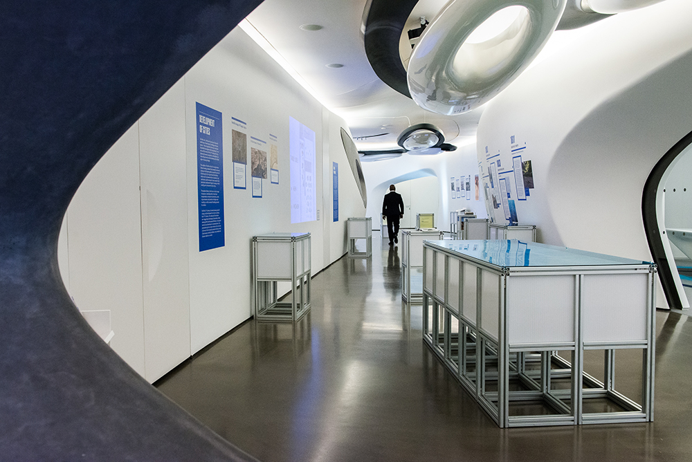
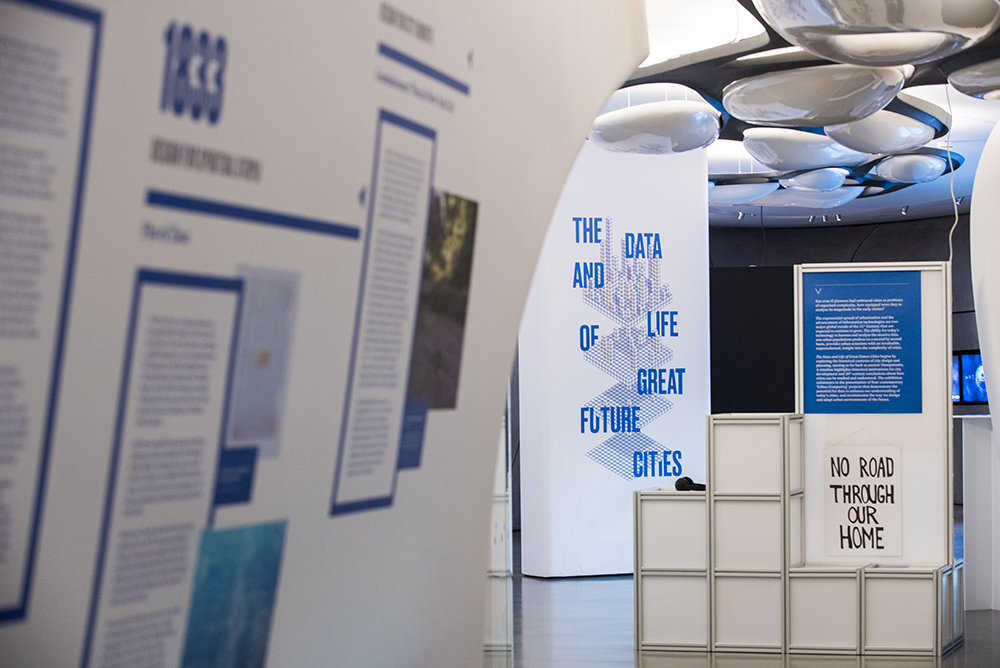
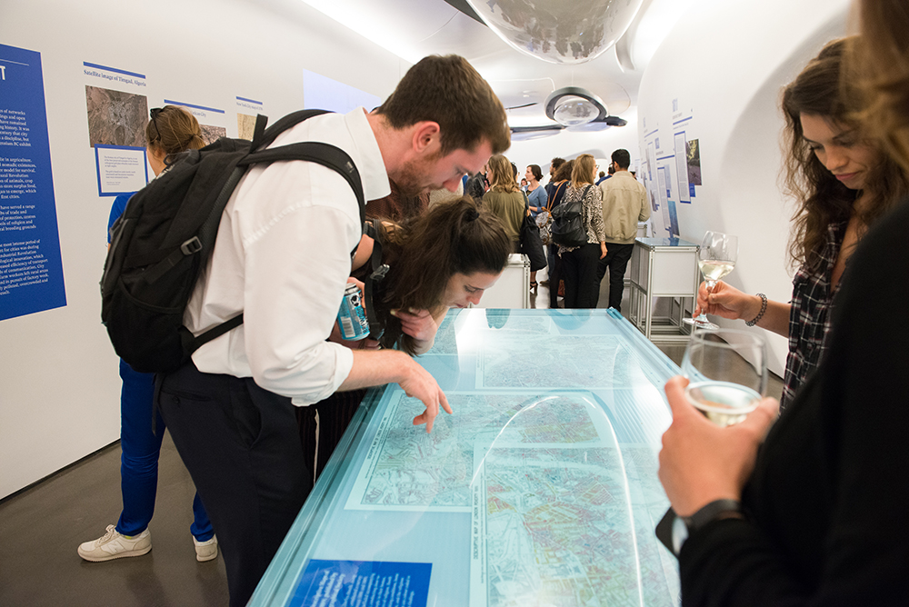
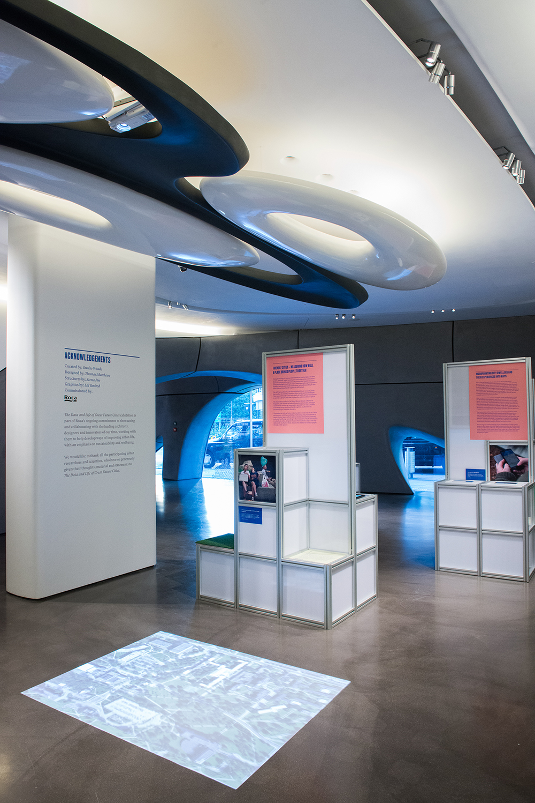
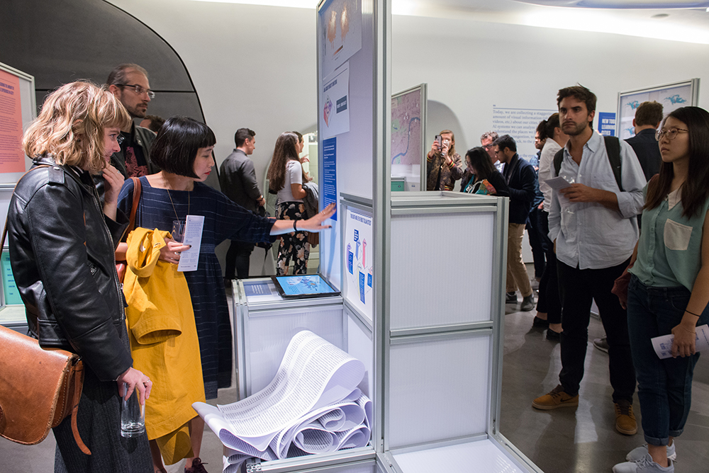

The Data and Life of Great Future Cities
Exhibition design and graphic identity with Thomas.Matthews studio curated by Studio Woode as part of the London Design Festival. The exhibition took a broad look at how cities have developed up until now with a focus on the tools that have been used to understand their complexities. The exhibition drew heavily from the seminal book “The Death and Life of Great American Cities” by Jane Jacobs and Studio Woode took the perspective that the recent use of big data was yet another tool for the understanding of the city and the exhibition brought attention to current projects utilising this new tool.The exhibition was designed to create a spatial narrative that followed the development of our understanding of the city. Beginning with low display structures you experience the exhibits from a top down perspective. As you move through the exhibition the structures build up around you so that you are viewing from ‘within the city’. The final part of the exhibition combines both the micro and the macro, large data sets and applications sit side by side with the detailed reality.
The structures themselves referenced a combination of the use of the grid in the development of cities and the aesthetic of data visualisations. The use of an aluminium frame system meant the structure was relatively cheap, could be assembled and disassembled easily for re-use in other forms. The aluminium profile could be used to hold in place twin-wall panels, display graphics and fix in place perspex boxes and tops for protected display.
Exhibition Design, Lead Designer
with Thomas.Matthews and Studio Woode at Roca Gallery, London
built and printed by
LTD LTD




